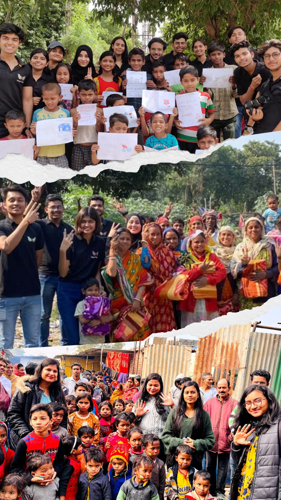

NayePankh Foundation was initiated to bring change and support communities during the challenging COVID-19 pandemic.
Today, NayePankh Foundation works towards uplifting underprivileged communities through educational support, food distribution, clothing drives and community programs.
Supporting underprivileged children through learning programs, mentorship and access to quality education.
Helping women build confidence, develop skills and create sustainable opportunities for a brighter future.
Working closely with local communities to create meaningful and lasting social impact.
Through education, empowerment, healthcare, sustainability and community engagement, NayePankh Foundation works towards building a brighter and more inclusive future for every individual.
Becoming a changemaker is simple. Follow these steps and start creating impact.
Fill out the volunteer registration form and tell us about your interests.
Attend an orientation session and meet fellow volunteers.
Join programs, events and community initiatives that match your passion.
Help transform lives through education, empowerment and outreach.
Ready to make a difference? Join our volunteer community and help create lasting impact across education, empowerment, health and sustainability initiatives.
Become A VolunteerFrom a small initiative in 2021 to a growing movement of volunteers, donors and community impact.
At NayePankh Foundation, we believe every child deserves education, every woman deserves opportunity, and every community deserves hope. Through compassion, action and collective effort, we work towards building a future where everyone has the chance to grow, learn and thrive.
Through education, nutrition and empowerment, we help individuals and communities build a better future.
We provide notebooks, textbooks, school supplies and learning resources to children from underserved communities. Through tutoring sessions, reading programs and digital learning initiatives, we help young minds stay in school and unlock their full potential.
Healthy children learn better. Our nutrition drives provide snacks, meals and healthcare awareness programs that improve well-being and support healthy growth. We ensure that children receive the care they need to thrive.
We support women through sanitary hygiene initiatives, vocational training, financial literacy programs and skill-building workshops. These efforts promote confidence, independence and sustainable livelihoods for women.
Stories from volunteers and supporters who joined our mission.
Working with NayePankh was an unforgettable experience. Seeing children smile after receiving books and school supplies reminded me how powerful small acts of kindness can be.
The team genuinely cares about people. Every activity is organised with passion and purpose. It was inspiring to be part of something meaningful.
The women's workshops were incredibly motivating. Watching participants gain confidence and learn new skills showed the real impact of community support.
Every event is filled with positivity and compassion. NayePankh creates an environment where everyone feels valued.
Volunteering here taught me the importance of giving back. Even a few hours of service can make someone's day brighter.
The education and nutrition initiatives are making a real difference. It's inspiring to see the foundation helping communities grow stronger.
Every contribution matters. Whether you volunteer, donate, mentor a child or simply spread awareness, you become part of a movement creating meaningful and lasting change.